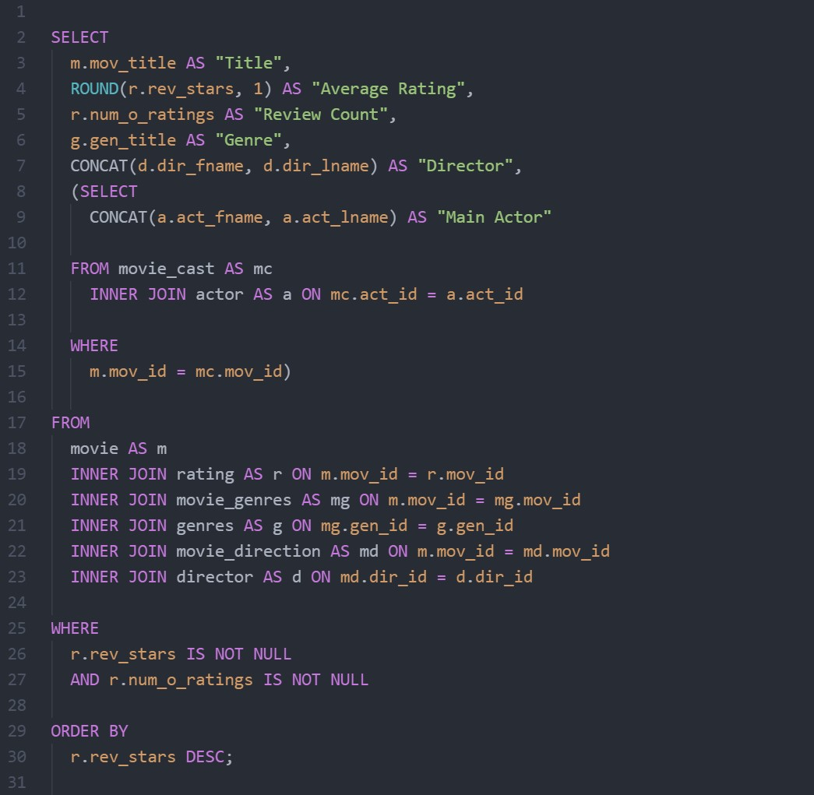

SQL Queries
This is a query I wrote for an example database filled with movies and their relevant data.


The query I wrote returns all movies without null values, in the order of highest rated to lowest rated.
In the SELECT portion of the query, I selected all my columns using aliases for their names and tables. I used the ROUND() function to limit the average rating to one decimal place, and the CONCAT() function to combine the first and last names of the directors and actors.
I used a subquery to select the main actor for each movie to demonstrate another method.
In the FROM portion of the query, I used the INNER JOIN method to link and add aliases to my tables.
In the WHERE section, I used IS NOT NULL to remove any rows containing empty values.
Finally in the ORDER BY section I ordered my rows by average rating, starting from the highest.
| Title |
Average Rating |
Review Count |
Genre |
Director |
Main Actor |
| The Usual Suspects |
8.6 |
779489 |
Crime |
Bryan Singer |
Stephen Baldwin |
| Vertigo |
8.4 |
263575 |
Mystery |
Alfred Hitchcock |
James Stewart |
| Aliens |
8.4 |
511613 |
Action |
James Cameron |
Sigourney Weaver |
| Lawrence of Arabia |
8.3 |
202778 |
Adventure |
David Lean |
Peter OToole |
| Blade Runner |
8.2 |
484746 |
Thriller |
Ridley Scott |
Harrison Ford |
| Annie Hall |
8.1 |
203875 |
Comedy |
Woody Allen |
Woody Allen |
| Slumdog Millionaire |
8.0 |
667758 |
Drama |
Danny Boyle |
Dev Patel |
| The Innocents |
7.9 |
20207 |
Horror |
Jack Clayton |
Deborah Kerr |
| American Beauty |
7.0 |
862618 |
Romance |
Sam Mendes |
Kevin Spacey |
| Beyond the Sea |
6.7 |
13091 |
Music |
Kevin Spacey |
Kevin Spacey |